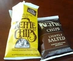

"Kettle Chips"、56g入りなのに数百円と高い…。なんでも全て天然の原材料を使用して熟練の職人の手作りだそう。まあ所詮アメリカ産だし、別に文句に感心したわけではないけれど、最近日本のポテチもどんどん美味しくなくなってるし（小池屋頑張れよ…）、話のネタかなと思って買ってみた。
最初に買ったのは写真のではなく、"Sea Salt & Vinegar"という青い袋のもの。袋を開けると濃厚なビネガーの香りが鼻孔を直撃した…。家族はみんな逃げ出したが、強力なのは最初だけってところもあり、お皿に開けて食べてみると、これがなかなか癖になりそうな味（汗
というわけで、他のも試してみようと写真の"New York Cheddar"と"Lightly Salted"も試す。
"Lightly Salted"が普通のものということになるのかなあ。日本のものと比べると、全体に味付けがキツいというか、単純というか、あまり豊かな感じはしない。加えて「堅揚げ」とある通り、舌触りもやたらパリパリしていてこれまた単純極まりない。
おいしいかと言われると、頷くのにはためらいを感じるが、こんなのもたまにはいいかも。
しかし、これを"Natural Grourmet Potato Chips"と、銘打てるもんなのかなあ…。ちょっと納得できないなあ。
ビール飲みたくなったら、ついでにまた買ってみるかも。